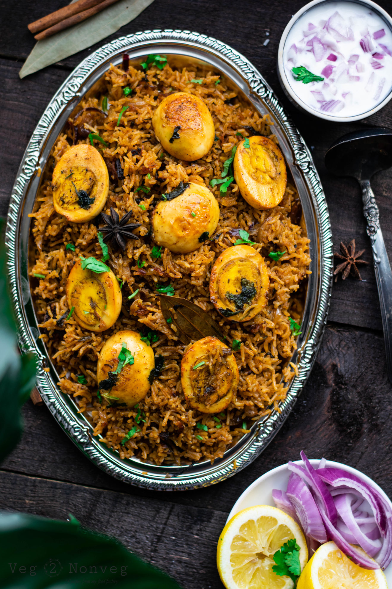

eggbiryani
Egg Biryani

Description
This is not a Dum biryani but tastes great with good flavours and can be prepared in a pot or a cooker
Ingredients
- eggs
- Ginger garlic paste
- Chilli powder
- salt
- coriander
- Oil
- Basmathi rice
- Onions
- Gee
- Curd
Steps
- Boil the Eggs in pot or cooker
- Heat the oil in the cooker and add biryani species to it
- When they sizzle add add onions and ginger garlic paste to it and fry it until the colour is gold
- add tomatoes chilli powder corrinder curd and mint leaves and cook it until the tomatoes becomes mushy
- add the eggs and mashala powder to it
- pour water and adjust salt if needed
- Add rice
- close the lid of the presure cooker and and keep it on the flame for 1 whistle and put aside until it cool down
- fluff up the biryani when you open the lid